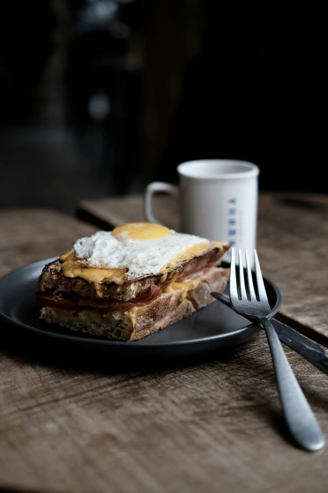
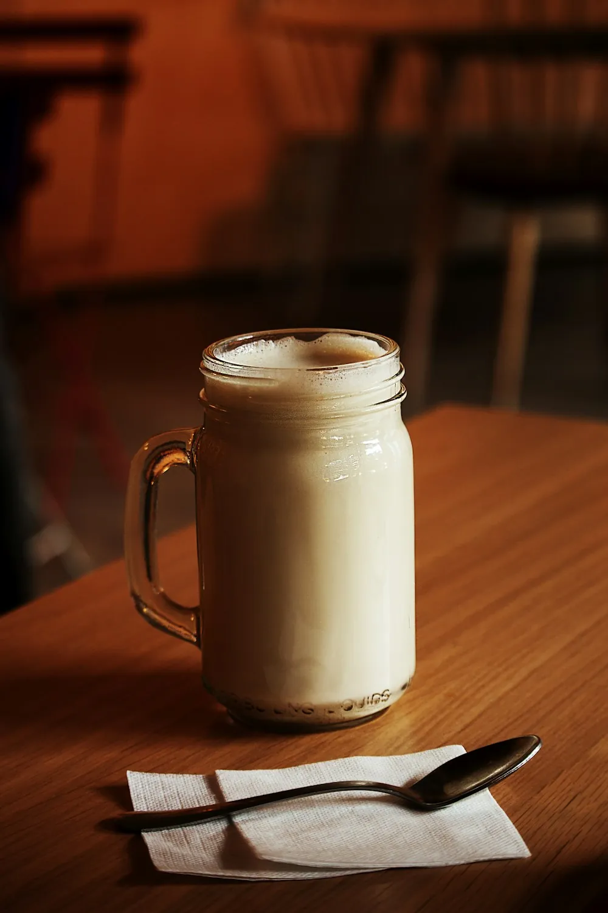
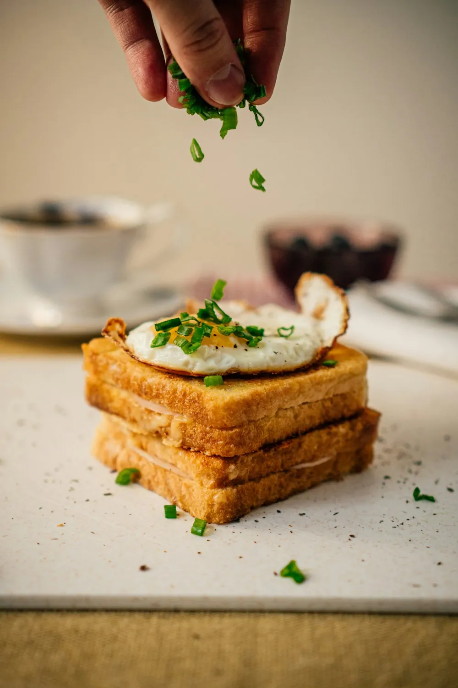
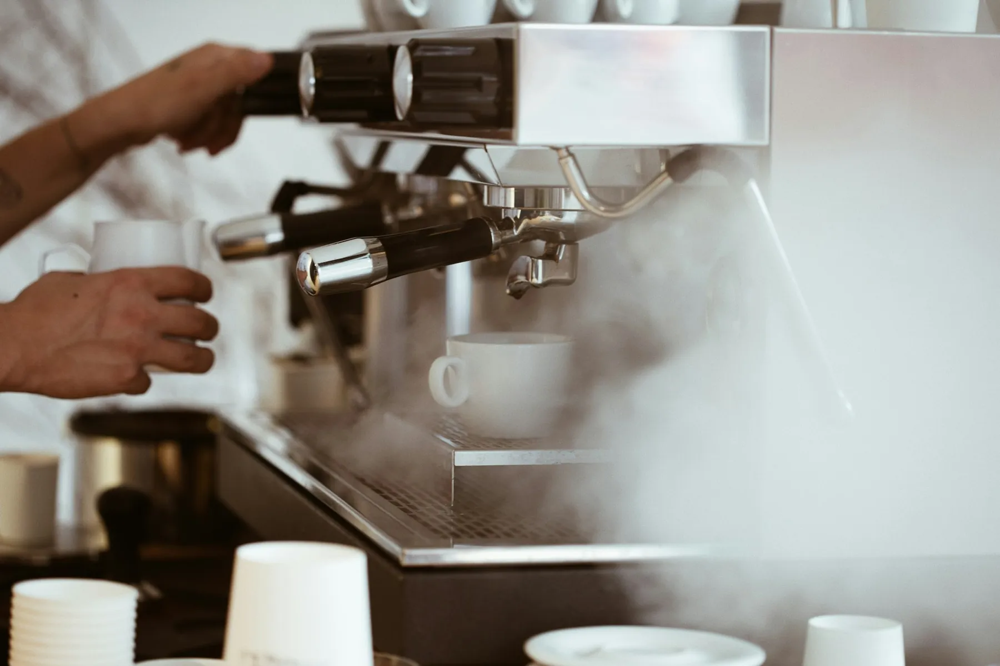
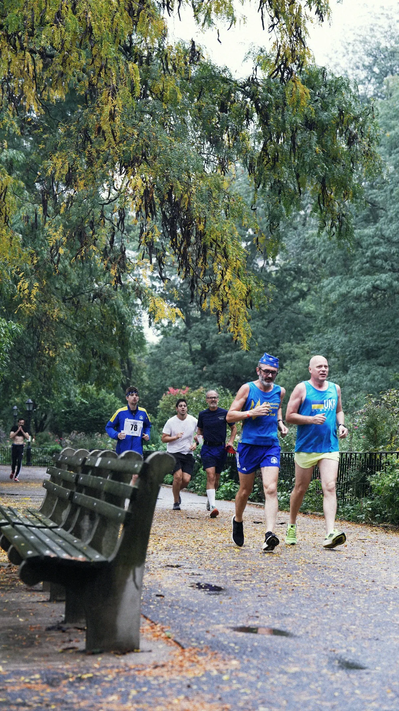
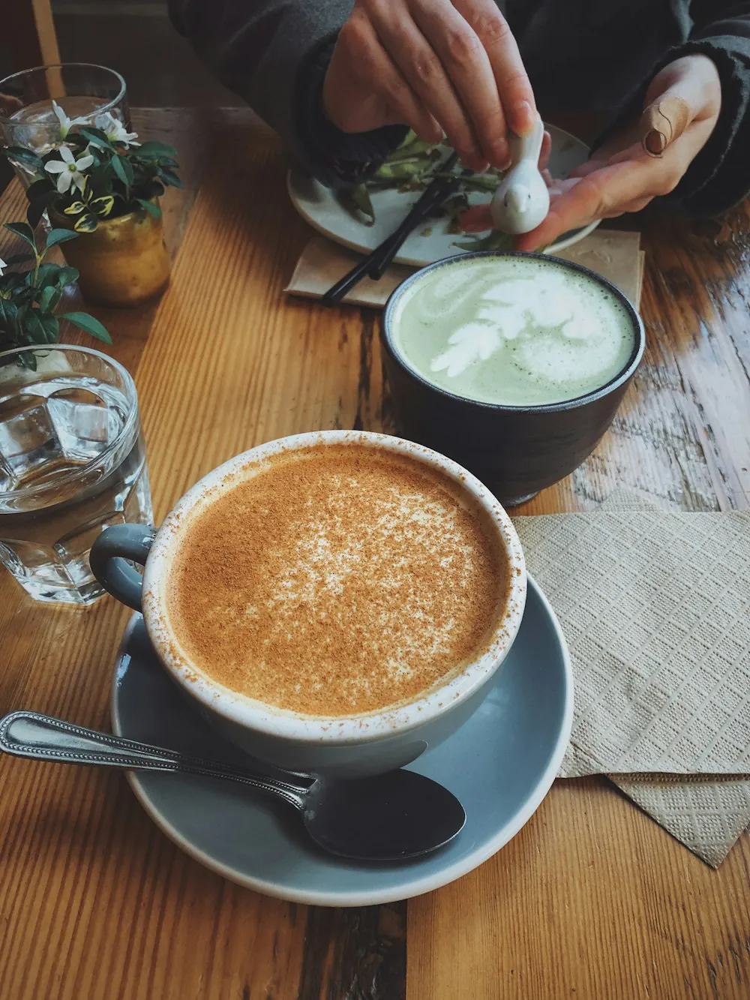

Koffie. Toast. Babbel.
Bonen van Andy Roasters, toasts en croques, en onze huisgemaakte dirty chai. Mee te nemen, of gewoon blijven zitten.
- 4,9uit 413 Google-reviews
- Ma, wo tot vr8 tot 16 uur
- Za en zo9 tot 17 uur
- Dinsdagdicht
Wat er bij ons op tafel komt
Koffie, chai en iets lekkers erbij. Toasts en croques kan je ook gewoon meenemen.
Koffie
Andy RoastersWe werken met bonen van Andy Roasters. Van een snelle espresso tot een cappuccino om bij te babbelen.
Dirty chai
HuisgemaaktOnze chai maken we zelf, met een shot espresso erbij.
Toasts
Ook to goOm hier op te eten of om mee te nemen.
Croques
Ook to goAan tafel, of in een zakje mee naar huis of het werk.
Brunch
Aan tafelVoor wie de ochtend wat langer wil laten duren.




Binnenwaaien mag altijd
Sinds begin 2026 schenken we koffie op de Grote Markt van Lier. Kom voor een koffie om mee te nemen, of schuif aan met een toast en neem je tijd.
"Je voelt je er meteen welkom."Evi, op Google
Samen lopen
Naast koffie hebben we ook een loopclub. Met de RUVA Running Club lopen we samen 5 kilometer. Wanneer we de volgende keer vertrekken, zie je op onze Instagram.
Bekijk de volgende loop
In de woorden van onze gasten
"Kei gezellige koffiebar met een warme, uitnodigende sfeer."
"Superleuk brunch/koffieplekje recht op de Grote Markt. Beste dirty chai latte die ik al heb gedronken en is hier homemade"

Tot straks op de markt
2500 Lier
via Instagram